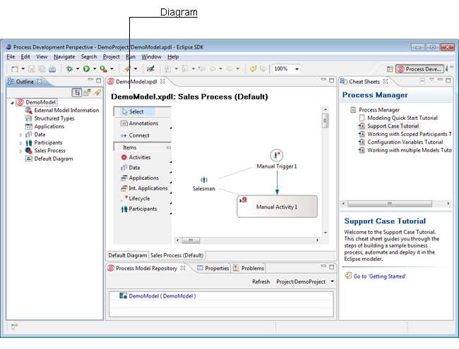

The Process Development perspective serves as platform for developers. Analysts can also use the Portal Modeling perspective to design business process models with generic objects in the Web Portal. In case you like to use the Modeling perspective in the Portal, refer to the Business Process Modeling Handbook for details.
To open the Process Development Perspective select Window > Open Perspective > Other... > Process Development Perspective. In this perspective you have several views to work with. They are basically:
You can customize your perspective by changing the layout of your views.
For more information about working with perspectives and views see the Eclipse
Help.

Figure: The Process Workbench